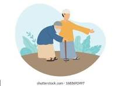

Examples of Good Deeds
Helping an Elderly Person (بزرگوں کی مدد کرنا)
English: Helping an elderly person with their groceries or tasks makes them feel cared for and improves their quality of life.
Urdu: بزرگوں کی مدد کرنا ان کو پرواہ محسوس کراتا ہے اور ان کی زندگی کے معیار کو بہتر بناتا ہے۔
Benefits: It strengthens community bonds and promotes a compassionate society.
Donating Clothes (کپڑے عطیہ کرنا)
English: Donating clothes helps those in need and reduces waste, promoting sustainability.
Urdu: کپڑے عطیہ کرنے سے ضرورت مندوں کی مدد ہوتی ہے اور فضلہ کم ہوتا ہے، جو پائیداری کو فروغ دیتا ہے۔
Benefits: It creates a positive impact on both people and the environment.
Volunteering at a Shelter (پناہ گاہ میں رضاکارانہ خدمات دینا)
English: Volunteering at shelters offers support to those in distress, while giving you a sense of fulfillment.
Urdu: پناہ گاہوں میں رضاکارانہ خدمات دینے سے پریشانی میں مبتلا افراد کی مدد ہوتی ہے اور آپ کو ایک مکمل کرنے کا احساس ہوتا ہے۔
Benefits: Promotes kindness, compassion, and community spirit.
Helping a Friend (دوست کی مدد کرنا)
English: Supporting a friend through difficult times can strengthen friendships and create a positive environment.
Urdu: مشکل وقت میں دوست کی مدد کرنا دوستی کو مضبوط بناتا ہے اور ایک مثبت ماحول پیدا کرتا ہے۔
Benefits: Encourages emotional well-being and mutual support.
Sharing Food (کھانے کی تقسیم)
English: Sharing food with the less fortunate spreads happiness and reduces hunger.
Urdu: کھانے کو کم خوش نصیبوں کے ساتھ بانٹنا خوشی پھیلاتا ہے اور بھوک کو کم کرتا ہے۔
Benefits: Strengthens community ties and teaches generosity.
Volunteering Time (وقت رضاکارانہ طور پر دینا)
English: Offering your time for community service projects or charity work makes a big difference.
Urdu: کمیونٹی سروس پروجیکٹس یا خیراتی کاموں کے لیے اپنا وقت دینا بڑا فرق پیدا کرتا ہے۔
Benefits: Builds a sense of responsibility and makes you a part of positive change.
Spreading Knowledge (علم کو پھیلانا)
English: Sharing knowledge through teaching or mentoring empowers others and promotes learning.
Urdu: تعلیم یا رہنمائی کے ذریعے علم پھیلانا دوسروں کو بااختیار بناتا ہے اور سیکھنے کو فروغ دیتا ہے۔
Benefits: Creates a more informed and capable community.
Helping Stray Animals (آوارہ جانوروں کی مدد کرنا)
English: Providing food and water to stray animals shows compassion for all living beings.
Urdu: آوارہ جانوروں کو کھانا اور پانی فراہم کرنا تمام جانداروں کے لیے ہمدردی کا مظاہرہ کرتا ہے۔
Benefits: Improves the welfare of animals and promotes kindness.